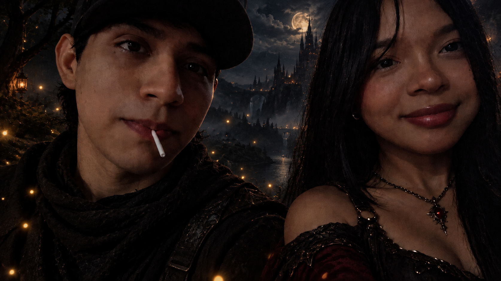

Nuestro Momento
Para ti
Hola, Vale.
Posiblemente estés leyendo esto después de terminar todo el resto de este escrito, y probablemente lo estés haciendo justo el día de tu cumpleaños, cuando te entregue tus regalos.
Pero quiero que sepas algo: esto no es un escrito de un solo día.
Llevo varios días, a lo largo de estos dos meses, escribiendo en las notas de mi celular todo lo que algún día quería decirte. Creo que alguna vez te conté que algún día iba a decirte todo lo que sentía, y supongo que este terminó siendo el momento.
Literalmente escribía cada cosa cuando me nacía hacerlo. Muchas veces eran pensamientos que aparecían después de verte, de hablar contigo o simplemente de vivir algún momento que quería guardar.
Así que esto es, en cierta forma, una pequeña parte de estos últimos meses vista desde mis ojos.
29 de julio
Este día fue la primera vez que salí con Vale en lo que podría llamar una cita... ¿supongo que sí? No sé.
Pero me gustó muchísimo estar contigo. Hasta me dieron ganas de tomarte una foto mientras pintabas porque me parecía demasiado bonita verte así, tan concentrada en lo que estabas haciendo.
También hicimos una actividad juntos que era nueva para mí y me gustó muchísimo compartirla contigo. Por esos días también nos agarramos de la mano y nos besamos por primera vez.
Ahora te vas y no sé qué va a pasar con todo esto. Espero muchísimo que funcione. Ya desde ese momento sabía que iba a esperarte con muchas ganas.
1 de agosto
Hoy me sentía demasiado enamorado y no podía dejar de pensar en lo hermosa que te veías.
Tanto así que me dieron ganas de presumirte y mostrarle a todo el mundo a la persona tan bonita que estaba conociendo.
Fue la primera vez que me nació subir una foto con alguien a mis estados de WhatsApp. Y aunque puse la excusa de que simplemente quería hacer una foto así, la verdad es que creo que ahí mismo me estaba dando cuenta de lo mucho que me estabas gustando.
La foto quedó muy linda y, de alguna manera, también me hizo darme cuenta de lo enamorado que estaba empezando a estar.
3 de agosto
Esta salida no me la esperaba.
Creo que hoy ya me estás empezando a mostrar a toda tu familia y siento que esto va por muy buen camino. No puedo dejar de verte todos los días y ya estoy pensando en cómo voy a hacer para esperarte el otro mes.
Hoy también conociste a mi mamá y me hizo muy feliz poder mostrarle a mi familia a la persona tan hermosa con la que estaba. Cada vez sentía más que esto no era algo pasajero.
14 de agosto
Volvió Vale.
Ya quería verte demasiado y ese momento de volver a encontrarnos después de una semana fue demasiado emotivo. No sé cómo explicarlo, pero fue muy bonito volver a tenerte cerca.
Me sentí completamente lleno de felicidad. En serio, estoy demasiado enamorado de ti. Espero que todo esto pase muy lento, porque quiero disfrutar cada momento contigo.
Te veías tan linda, incluso estando cansada, que me volvía a preguntar cómo podía ser posible que alguien pudiera hacerme tan feliz simplemente existiendo.
16 de agosto
Escribo esto después de una de las experiencias más bonitas y amorosas que he vivido. Todo fue perfecto.
Este día conociste a toda mi familia, comimos, vimos cosas que nos gustan y compartimos muchísimo. También sentí que pude conocer una parte de ti que llevaba mucho tiempo escondida y que muy pocas personas habían podido conocer.
Y eso significó muchísimo para mí.
No quiero decepcionarte. Quiero demostrarte que eres una persona increíble, incluso en esos momentos en los que tú misma no logras verlo. Porque yo sí lo veo.
Y mientras más te conozco, más claro tengo que no quiero compartir todo esto con nadie más que contigo.
25 de agosto
Hace unos días empezamos a jugar Minecraft.
Sinceramente, no pensé que me fuera a reír tanto ni que me fuera a gustar tanto jugar contigo. Pensé que sería algo de dos o tres días y ya, pero viendo cómo vamos, creo que esto va para mucho más.
Me encanta que te gusten cosas que también me gustan a mí. Tenemos muchísimas cosas en común y creo que eso hace que compartir contigo sea todavía más especial.
Me hace feliz estar contigo, incluso haciendo cosas tan simples como jugar Minecraft y hablar de cualquier tontería. Eres todo para mí, esa tonta.
4 de septiembre
Hoy no sé muy bien cómo describir lo que siento.
Las cosas se han puesto difíciles y, aunque me cuesta admitirlo, me di cuenta de cuánto significa tenerte en mi vida.
Pasamos muchísimo tiempo hablando por llamada, tú mostrándome tus cosas, yo mostrándote las mías, y en esos momentos siento una tranquilidad que me cuesta encontrar en otros lugares.
Después de lo que pasó ese día, sé que algunas cosas dentro de mí cambiaron y que volver a sentir la misma tranquilidad y confianza no iba a ser inmediato.
Pero también sé algo: no quiero que un momento difícil termine definiendo todo lo bonito que hemos construido. Quiero aprender, mejorar y hacer lo necesario para que algún día todo esto que hoy me preocupa simplemente sea un recuerdo de una etapa que logramos superar juntos.
Sigo pensando que eres la persona que quiero. Tienes defectos, tienes actitudes que pueden dolerme y yo también tengo muchísimas cosas que mejorar. Pero supongo que amar a alguien también significa entender que ninguno de los dos es perfecto y que aun así podemos elegirnos.
Hoy me extendí mucho, pero necesitaba escribirlo. Quizás algún día te mostraría todo esto.
Y parece que ese día finalmente llegó.
11 de septiembre
Ya han pasado varios días desde que escribí lo anterior.
Las cosas se han complicado un poco, pero eso no ha cambiado lo que siento por ti.
Jugar Minecraft, hablar durante horas y simplemente compartir nuestras cosas hace que todo se sienta un poco más fácil.
A veces me frustra no poder hacer que tú misma veas lo linda y hermosa que puedes llegar a ser. Me hace sentir un poco tonto pensar que no puedo hacerte ver lo que yo veo cuando te miro.
Pero supongo que eso no depende solamente de mí. Solo quiero seguir recordándote, todas las veces que sea necesario, que hay muchísimo en ti que vale la pena querer.
Y espero que algún día puedas verte aunque sea un poquito como yo te veo.
20 de septiembre
Hoy decidí todos los regalos.
Ya vienen en camino y me hace muy feliz pensar en tu reacción cuando los recibas. Espero muchísimo que te gusten.
Hoy saliste y te veías demasiado hermosa. Necesito verte ya. Necesito tenerte cerca.
En serio, eres una niña demasiado hermosa y cada vez me dan más ganas de presumirte. Creo que ya es hora de que todo el mundo conozca a la persona que amo.
27 de septiembre
Creo que ya es hora de terminar esto.
Borré y añadí muchas cosas durante estos días. Algunas veces escribía algo y después pensaba que podía decirlo mejor, así que lo cambiaba. Pero hoy, después de nuestra primera salida familiar y de nuestra primera cita —aunque haya sido solamente un heladito—, siento que ya puedo terminarlo.
Y aunque haya sido algo tan sencillo, se sintió especial. Supongo que eso es algo que haces tú: haces que todo se sienta especial, incluso las cosas más pequeñas.
Ya no sé cómo describir todo lo que siento por ti. No podría destacar una sola cosa que me guste de ti porque, siendo sincero, me gusta absolutamente todo. No tengo quejas de la persona que eres ni me arrepiento de haberte elegido para amar.
Puedo verte durante horas, hablar contigo durante horas y no cansarme de escucharte.
Y después de todo lo que he escrito, creo que ya no sé cómo explicar mejor lo que siento. Pero de algo sí estoy seguro:
Este amor que siento por ti es el más sincero que he sentido hasta ahora.
Te amo, Valeria.
Y te digo así porque ese es el hermoso nombre que decidieron darte y con el que te conocí. Aunque después te convertiste en mi amor, en mi gatita y en todos esos nombres que probablemente seguiremos inventando para ti.
Te amo.
Feliz cumpleaños a la mejor persona que podría haber llegado a mi vida.
De verdad siento que encontré a alguien que me ama tanto que todos los días me hace querer mejorar, crecer y ser alguien que esté a la altura de todo lo bonito que me das.
Eres mi luz en toda la oscuridad de mi vida. Eres todo para mí, Vale.
Te amo de mil maneras y, si pudiera, de infinitas más.
Cada cosa que haces, cada cosa que me cuentas y hasta las cosas más pequeñas que mencionas me parecen sacadas de un cuento. De una historia que quizás todavía no hemos terminado de escribir.
Y como a los dos nos gusta tanto el dark fantasy, quiero invitarte a conocer mi mundo sombrío, si es que todavía no lo conoces.
Aunque pensándolo bien...
Ya lo conociste.
Porque ese mundo eres tú, amor mío.
Te amo, Vale.
Feliz cumpleaños.
Gracias por existir.
Gracias por estar conmigo.
Y simplemente...
Gracias por ser tú. ❤️
Y aunque podría quedarme aquí, todavía falta algo.
Quizás la última pista está justamente donde comenzó a quedar guardado uno de mis recuerdos favoritos de nosotros.
Esa primera foto juntos guarda mucho más de lo que se puede ver en ella.
Porque una fotografía puede capturar un momento, pero no siempre cuenta toda la historia. A veces hay que mirar un poco más allá de lo que aparece frente a nosotros… incluso aquello que quedó guardado del otro lado de ese recuerdo.
Y si hay una foto que merece ser vista una vez más, creo que es precisamente esa.
Escucha nuestra música
Ir a la Playlist